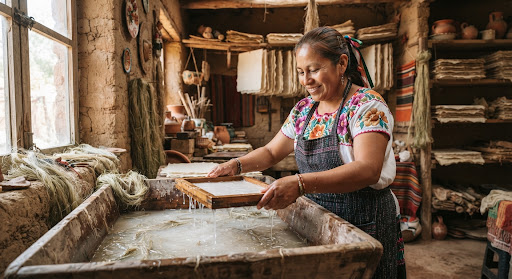

Misivas guardadas, aromas de tinta de nuez y pensamientos compartidos.
history_edu
✉
Sofía M.
CDMX
Sobre perfumado a canela • 10:42 AM
MEX 24coffee
OCT 24 • MATASELLOS
format_quote
“Te escribo desde la terraza en Coyoacán, comenzó a llover y el café huele a canela. Releí las notas de tu viaje y sentí que la tarde se detenía por completo...”
favorite
Lacre intacto abierto
description2 folioschevron_right
Mateo R.
Guadalajara
Tarjeta Postal • Ayer, 19:42
trainCORREO
¿Lograste terminar el capítulo de anoche? Me quedé pensando en la metáfora del tren y cómo cada estación es una despedida diferida. Espero tu respuesta con calma.
Tinta estilográfica azul-mar
replyResponder misiva
Valeria S.
Monterrey
Pliego kraft doblado • 22 Oct
eco
Adjunto va la foto del atardecer sobre el Cerro de la Silla y mis anotaciones sobre la nueva encuadernación japonesa que probamos. Las hojas secas aguantaron la prensa.
photo_camera_back1 postal revelada + 3 hojas dobladas
Ver adjuntos

Diego T.
Oaxaca
Papel de algodón • 18 Oct
Archivada
“Encontré una libreta artesanal en el mercado y me recordó a nuestras charlas sobre papel de algodón y fibras de maguey. Te guardé un pliego...”
local_floristTextura rústica de 240g
ink_pen
El valor de lo pausado
Una carta tarda días en pensarse y una vida en olvidarse. Elige un destinatario y tómate tu tiempo.